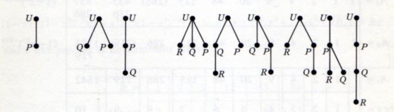

Лектор: Александр Дайняк
МФТИ, осенний семестр 2015/2016 года
Генеалогическое дерево
династии Саксонов (XII век)
Дерево добродетелей (XIV век)
Дерево грехов (XIV век)
Помеченные деревья из статьи Кэли (1857)
A. Cayley. On the Theory of the Analytical Forms Called Trees. Philosophical Magazine, 4(13):172–176, 1857.
Логический квадрат
— диаграмма отношений между силлогизмами.
Juan de Celaya (1490—1558)
Иллюстрация А.-Т. Вандермонда (1771 г.) к задаче об обходе шахматной доски конём.
Иллюстрация У. Гамильтона (1857) к задаче об обходе икосаэдра.
Графы молекул из статьи А.К. Брауна (1864).
D.E. Knuth (GD' 1996):
Graph drawing is the best possible field I can think of: it merges aesthetics, mathematical beauty and wonderful algorithms.
It therefore provides a harmonic balance between the left and right brain parts.
A good graph drawing algorithm should leave something for the user’s satisfaction.